【サカつく2026】サカつくTV ハーフタイムSP'26冬｜Ver.3.0・超覚醒・バイエルンSP11人の公式生配信まとめ
育成の常識が変わる!? シナリオモード＆超覚醒、そしてバイエルンSPが11人同時登場！
でも、11人まとめてガチャ追加には言いたいことがある。

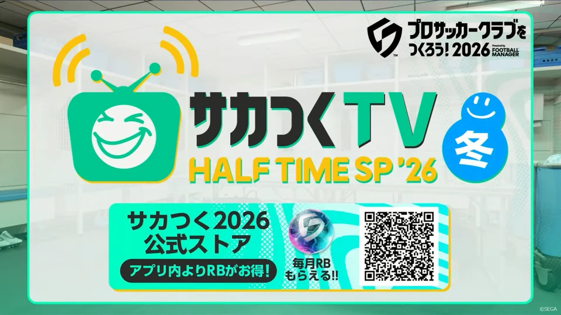
11月19日の公式生配信で、12月の大型アップデートに向けた情報が一気に公開されました。セーブデータの注意点から育成の新システム、FCバイエルン・ミュンヘンの11選手まで。後半では、僕が期待していることと、どうしても納得できないことも書きます。
先に言っておきます。今回の配信、Ver.3.0の「シナリオモード」と「超覚醒」はかなり楽しみです。育成をじっくり極めたい人にも、短時間で戦力を整えたい人にも、新しい遊び方が生まれそう。
一方で、バイエルンSPはまさかの11人同時追加。うれしいニュースであるほど、ガチャの仕組みには慎重であってほしい。この期待と違和感の両方を、放送内容に沿って整理します。
公式生配信をここで再生
番組の内容を動画でも確認できます。再生できない場合はYouTubeのリンクをご利用ください。
ロスター更新で何が変わる？ セーブデータとメダルの扱い
今あるスカウトチケットは、慌てて使い切らなくてOK。ただし、旧メダルの交換には期限があります。
12月予定のVer.3.0では、2026-27シーズンの夏の移籍市場を反映するロスターアップデートが行われます。選手・クラブ構成だけでなく、SP選手スカウトのラインナップやメダル交換所にも変更が入ります。
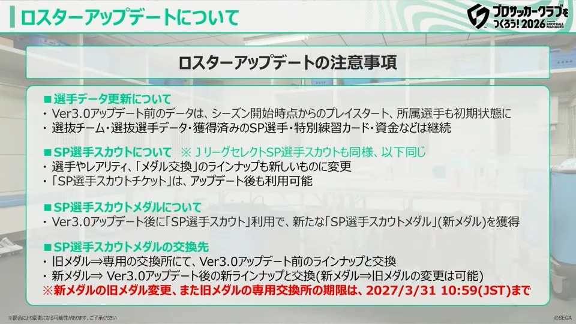
シーズン開始時点からプレイし直しになる
Ver.3.0前に作成したサカつくモードのセーブはシーズン開始時点からプレイし直し。所属選手はクラブの初期状態に戻ります。
選抜チーム・選抜選手、獲得済みSP選手、特別練習カード、シーズン年数、資金、マイタウンなどは継続します。
新メダルと旧メダルの交換方向を間違えない
メダルのルールを図で整理
新 → 旧は交換可能／旧 → 新は交換不可。 旧メダルは旧ラインナップ専用の交換所で使用します。
新しいラインナップを待ってチケットを使うか、今の目当ての選手を狙うか。「先に消費しなきゃ損」という状況ではないのはありがたいですね。ただしメダルの交換方向と期限は、後から知らなかったでは済ませたくない部分です。
▶ ロスター更新の説明を見る（10:04）Ver.2.5は大型改修ではない。でも、見た目は大きく変わる！
Ver.2.5の実施予定日は2026年11月25日（水）。開発側は、もともと予定していなかったマイナーアップデートだと説明しました。新しい大型機能の追加が中心ではなく、Ver.2.4までの一部不具合修正と、ガチャ・コラボに伴う更新が主な内容です。
一方、FCバイエルン・ミュンヘンを前面に出した新キービジュアルやアプリアイコンも登場。ここから年末に向けた空気がガラッと変わっていきそうです。
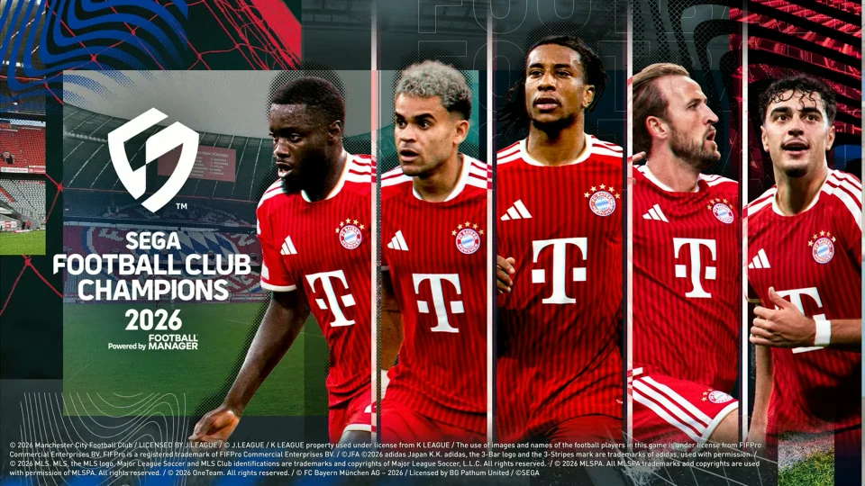
シナリオモード登場！ 3年でアジア王者を目指す、新しい育成の旅
SP選手を最大6人同時に育成。育成時間を短縮しながら、クラブ経営のドラマも楽しめる。
これまで「新サカつくモード」と呼ばれていた新要素の正式名称が「シナリオモード」と発表されました。既存クラブへの就任ではなく、オリジナルクラブを設立してスタートし、3年間でアジア王者を目指す形式です。
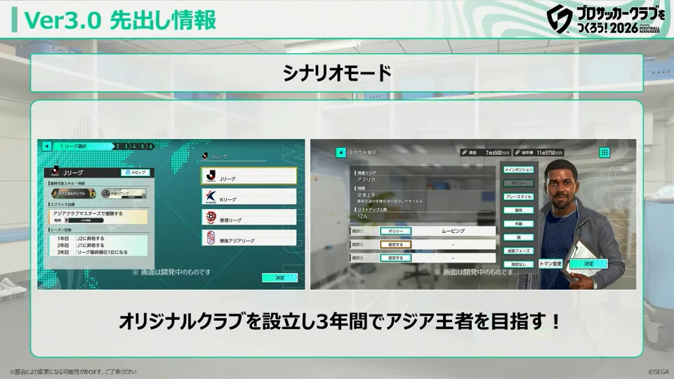
期間内にアジア王者を目指す
短い期間でも戦力を整えやすく
アジア各リーグのシナリオを体験
練習は「月4週」。カードをつなげて効率を上げる
このモードでは、ひと月を4週に分けて練習を配置します。一度使った練習カードは手元からなくなり、翌月に入るカードは抽選。同じ種類の練習を最大3週分までつなげると、効果が高まる仕組みです。

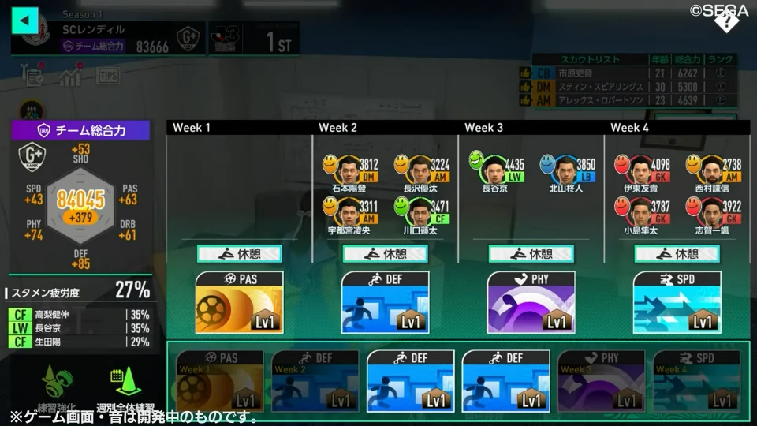

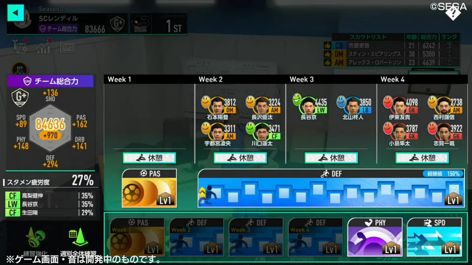
目の前の2枚を今つなぐか、もう1枚を待って3週連結を狙うか。カードの引きと配置を考える面白さがありそうです。
2カ月に1回の「練習強化」で育成を加速
資金を使った「練習強化」は2カ月に1回。練習レベルを上げたり、コンディションや観客数に関わる選択肢が登場したりします。公開練習など、クラブ経営らしい要素も紹介されました。
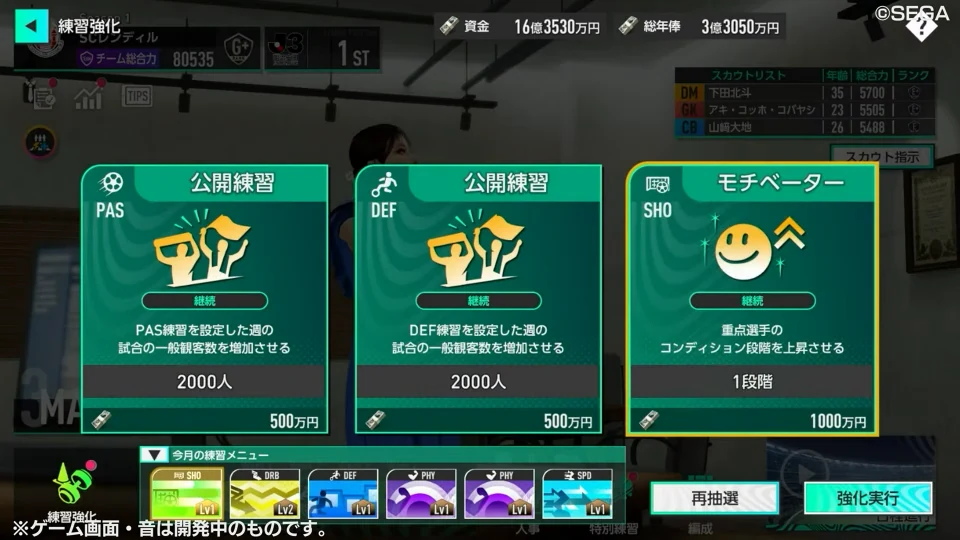
超覚醒とは？ SP選手も対象、スキル・特徴枠が増える可能性も！
「超覚醒」は、従来の覚醒とは別のゲージを使う新たな成長要素として紹介されました。現在能力と成長上限の上昇に加え、選手によってはスキル枠・特徴枠が増える可能性も示されています。
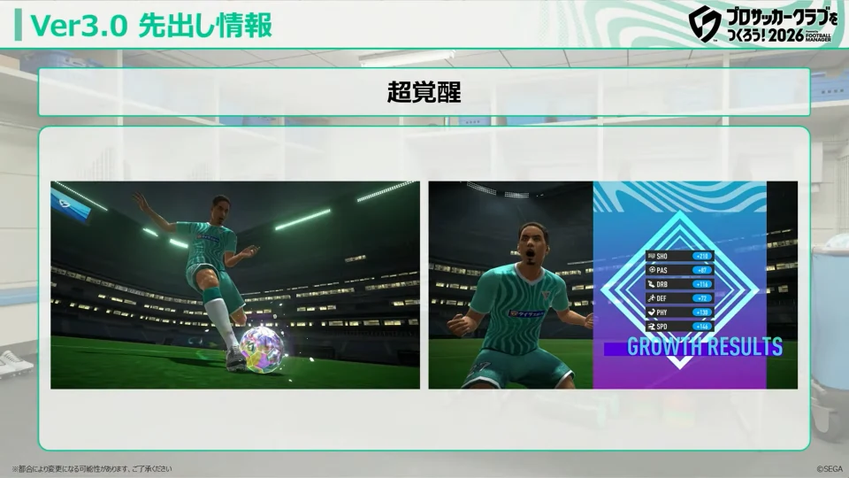
監督コメントへの回答で、SP選手も超覚醒の対象であることが明言されました。
発生率や成長量を全SP選手一律とはせず、選手ごとに調整する予定と説明されています。
この発表だけで「全員が必ず大幅強化される」と受け取るのは禁物です。仕組みの正確な数値や条件は、Ver.3.0の続報を確認したいところ。
▶ 超覚醒の紹介を見る（34:53）FCバイエルンSP選手が11人同時登場！ ポリシーはリアクション
ハリー・ケイン、ムシアラ、キミッヒ、ノイアーまで。まさかのベストイレブン規模で実装！
11月25日から「FCバイエルン・ミュンヘン SP選手スカウト」が開始予定。番組では、11選手が同時にラインナップへ加わること、ポリシーがリアクションであることが紹介されました。
⚽ 前線の3選手
- ルイス・ディアス（LW）
- ハリー・ケイン（CF）
- ミカエル・オリーズ（RW）
🎯 中盤の3選手
- ジャマル・ムシアラ（AM）
- ヨシュア・キミッヒ（DM）
- アレクサンダル・パブロヴィッチ（DM）
🛡️ 守備・GKの5選手
- ナサニエル・ブラウン（LB）
- キム・ミンジェ（CB）
- ダヨ・ウパメカノ（CB）
- コンラート・ライマー（RB）
- マヌエル・ノイアー（GK）


ハリー・ケインには特別な「虹の特徴」
キービジュアルの5選手について、プレイスタイル・メインスキル・特徴も先行公開。ハリー・ケインには、最優秀選手受賞を受けた特別な特徴「最優秀選手の証明」が用意され、開発側はレジェンド選手に近い特徴と説明しています。
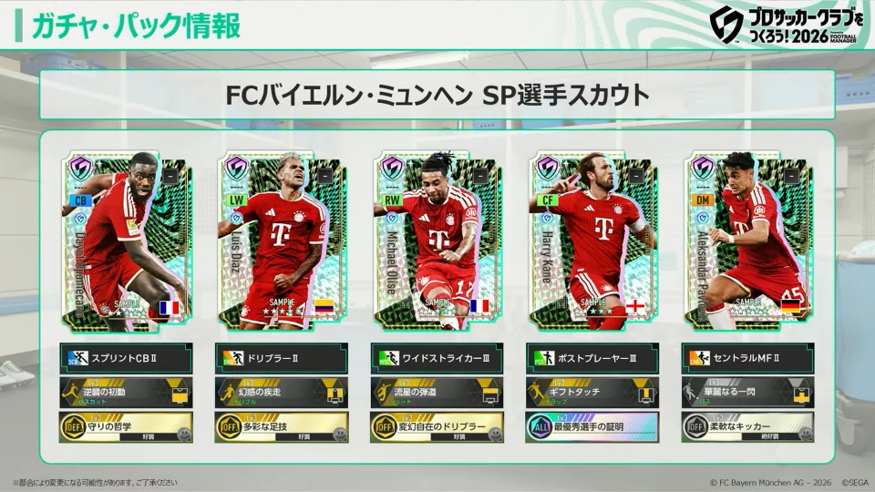
ガチャチケットは最大30枚＋★3確定1枚
カウントダウンログインボーナスで最大10枚、別途、実装記念のログイン施策で最大20枚。さらにバイエルンSPの★3確定チケット1枚も配布予定です。ログイン日数や受け取り条件は実装時のゲーム内お知らせで確認してください。
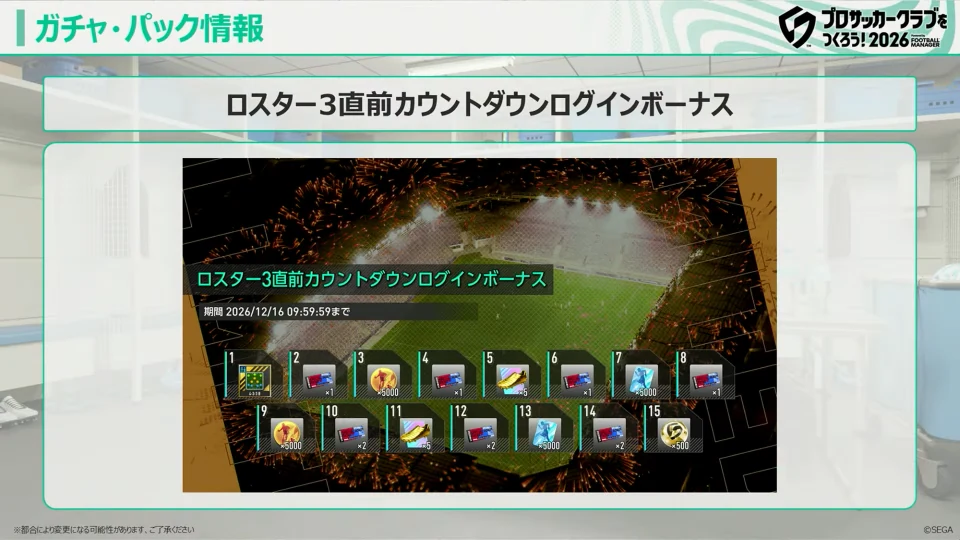
育成応援パックも登場予定
スカウトとは別に育成応援パックA／B／Cも紹介されました。スライド上の価格はA2,800RB、B4,800RB、C9,800RB。内容・販売条件は実装時のお知らせを確認してください。
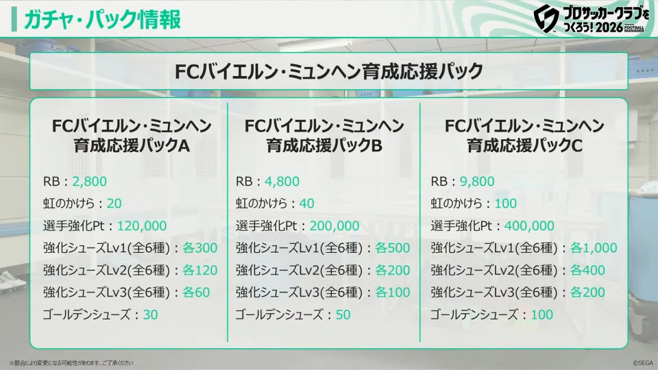
運営に直接聞けた！ 監督たちの質問と回答6件
放送中に寄せられた質問へ、運営・開発チームが回答したコーナーです。肖像権への配慮から使用画像はコーナータイトルの1枚のみとし、質問と回答を文章で整理しました。
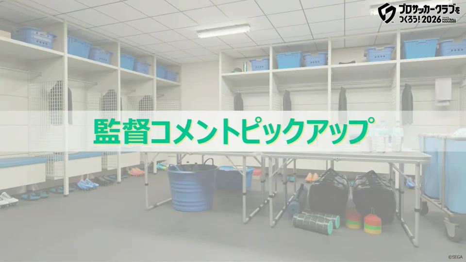
シナリオモードと従来のサカつくモードでは、育成結果にどんな差がある？
シナリオモードの狙いは育成時間の短縮と、強い選手に追いつきやすくすること。従来の5回覚醒などを突き詰めて育てた選手を超えるためのモードではありません。監督実績・リーグレベル・選手継承など、従来モード独自のやり込み要素も残ります。
▶ 質問場面へ（41:47）SP選手にも「超覚醒」は発生する？
SP選手にも発生します。 ただし発生確率や成長量は選手ごとに設定する方針で、すべての選手が同じように大きく伸びるわけではありません。
▶ 質問場面へ（44:17）海外リーグでも1部・2部を増やし、昇格・降格を楽しみたい
要望は理解しているものの、実名での収録にはライセンス上の課題があります。実名にこだわらない実現方法も可能性として考えられますが、現時点で実装を約束できる段階ではありません。
▶ 質問場面へ（45:20）WPSレジェンド帯で、敗北時のレーティング減点を緩和してほしい
開発側が確認した強いプレイヤーの勝率は約96％。敗北時の減点が小さすぎると、対戦回数を重ねた人のポイントが積み上がり続け、ランキングの公平性が損なわれる懸念があります。今後の環境やデータによって変更の可能性はありますが、緩和決定ではありません。
▶ 質問場面へ（46:54）シナリオモードは3年間が終わった後も遊び続けられる？
3年間が経過した時点で終了します。 指定条件を達成できなければ途中でゲームオーバーになる場合も。今後、別の地域を舞台にしたシナリオへ広げる可能性には触れましたが、実装が決まったわけではありません。
▶ 質問場面へ（49:08）次のダイスイベントは今回の仕様を続ける？ 以前の設定に戻す？
単純に以前の仕様へ戻すのではなく、新たな設定で調整する方針です。運営の説明では、虹のかけらの平均獲得数は従来も今回もおよそ10個。一方で今回の仕様は、ほとんど獲得できない人が出るなど獲得数のばらつきが大きかったことを問題と認識。次回はディレクター自身もより深く調整に関わると述べました。
▶ 質問場面へ（50:27）※「約96％」や「平均約10個」は、配信内で開発側が説明した対象・集計による数字です。全プレイヤーの実績や次回イベントの確定獲得量ではありません。
サポーター企画が始動！ 12月6日には第2回最強監督決定戦
サカつくサポータープロジェクトとは？
『サカつく2026』の魅力を動画・配信・SNSで発信する監督を、公式が支援するプロジェクト。投稿や活動状況に応じてポイントが加算され、ランクに応じて称号や専用報酬などが検討されています。

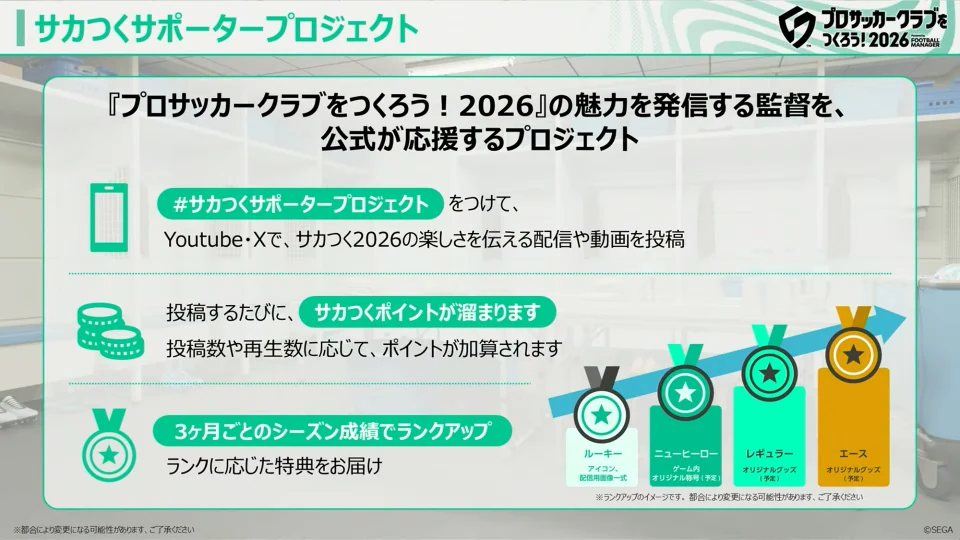

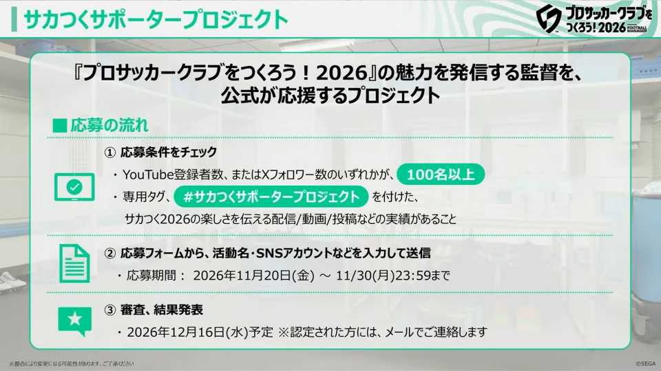
応募条件の一例はYouTube登録者数またはXフォロワー数100名以上で、専用ハッシュタグを付けた活動実績なども必要。応募期限は11月30日23:59です。詳細条件は公式のお知らせを優先してください。
第2回サカつく2026 最強監督決定戦 in JAPAN
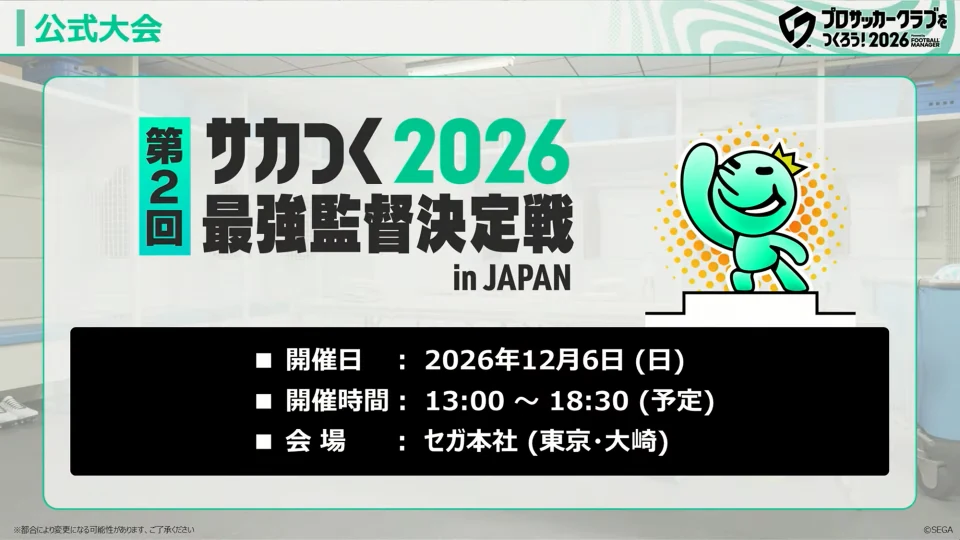
開催予定は12月6日（日）13:00〜18:30、会場はセガ本社（東京・大崎）。観覧は無料で、事前エントリーの締切は11月23日（月・祝）23:59です。協賛として「銀のさら」も紹介されましたが、会場での飲食提供は数量に限りがあります。
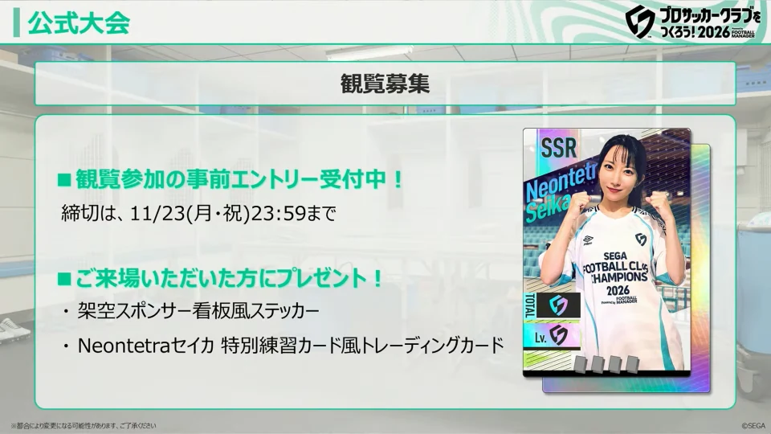
公式発表は楽しみ。でも、僕には言いたいこともある。
ここからは、公式が発表した情報とは分けて、僕自身が注目した4つのポイントを紹介します。新しい遊び方への期待も、納得できないガチャの設計も、どちらも正直に書いていきます。
恒常ガチャ更新でリセマラ環境も変わる
ロスターアップデートで恒常SP選手のラインナップが変更されるため、新規アカウントのリセマラ基準も大きく変わることになります。
これから始める人にとって、どの選手を最初に狙うべきなのかは重要なポイント。
個人的には、ラインナップ変更に合わせてチュートリアルにも変更が入るのか気になるところです。
シナリオモードにはコラボ展開を期待したい
今回発表されたシナリオモードは、今後の展開が非常に楽しみです。
僕が特に期待しているのは、他のゲームや漫画作品とのコラボレーション。
例えば『キャプテン翼』の世界に監督として参戦し、その世界のチームを率いて大会優勝を目指すようなシナリオイベントが実現したら面白いと思います。
さらに、シナリオと連動したコラボガチャやイベントSP選手、イベント限定のSSR特練カードなども登場すれば、かなり盛り上がるのではないでしょうか。
もちろん、これは現時点で発表されている内容ではなく、僕個人の期待です。
サカつくサポータープロジェクトは視聴者にも還元が欲しい
サカつくサポータープロジェクトは、平たく言えば「報酬を用意するので、もっとサカつくの情報を発信してほしい」という取り組みだと受け止めています。
特にYouTubeでサカつくの動画が増えてくれることには期待しています。
ただ、気になる点がひとつあります。
この仕組みは運営側と配信者にメリットがありますが、配信者を応援する視聴者には直接的な報酬が用意されていない点です。
もちろん、視聴者への報酬が本来の目的ではないことは理解しています。
それでも、配信者の活動や数字を支えているのは動画を見てくれる視聴者です。
例えば運営が毎月共通の目標を設定し、認定サポーターの活動を通じて目標を達成できた場合には、全ユーザーにプロモーションコードを配布する。
そんな仕組みがあれば、運営・配信者・視聴者の全員にメリットが生まれると思います。
FCバイエルン11人同時追加のガチャは大嫌い
今回のガチャ情報で、僕が最も気になったのは11人もの選手を一気に新規追加するという点です。
僕は、こういうガチャの出し方が大嫌いです。
11人という人数は、どうしても「全員揃えたい」というユーザーの気持ちを刺激します。
問題は、ある程度揃ってしまった後です。
例えば10人まで獲得できて、残り1人になったとします。
ここまで集めたら、最後の1人も欲しくなるのが自然な心理です。
しかし、いくらガチャを回しても最後の1人が出なかったらどうでしょうか。
それまで積み重ねてきた満足感が、最後の1人を獲得できなかったという不満に変わってしまう可能性があります。
僕は他のゲームでも、装備一式を揃えたくなるようなガチャで、こうした状況を見てきました。
順調に揃っている間は楽しいのですが、最後まで揃わなかったときに一気にやる気がなくなる。
更にそれが開催期間が終了すると二度と手に入らないという仕様だった場合は最悪です。
その結果「これからも同じことが続くなら、早めにやめてしまおう」と考えて、ゲーム自体をアンインストールしてしまう。
こういう体験につながりかねないガチャの設計は、本当に嫌いです。
11人を同時に追加するのであれば、例えばガチャで登場するのは4人までにして、残り7人はイベント報酬などで入手できるようにするのが理想だと思います。
そうすれば、イベントをプレイしてチームを揃える楽しみを残しつつ、ガチャで狙う選手も明確になります。
11人編成というサッカーゲームならではの魅力を、コンプリートのプレッシャーではなく、プレイする楽しさにつなげてほしいところです。
12月のVer.3.0は「育成の楽しさ」が変わる節目になりそう
今回の配信で一番楽しみになったのは、従来のやり込みを残しながら、新しい育成体験が増えることです。3年間でアジア王者を目指すシナリオモード、SP選手にも適用される超覚醒。育成をもう一度最初から考えたくなる情報でした。
その一方で、ロスター更新時のメダル交換期限やセーブデータの注意点は、期待だけで見落としてはいけない部分です。バイエルン11人同時追加も、豪華さとガチャの遊びやすさを分けて考えたいですね。
次回は12月6日、公式大会会場から生配信予定
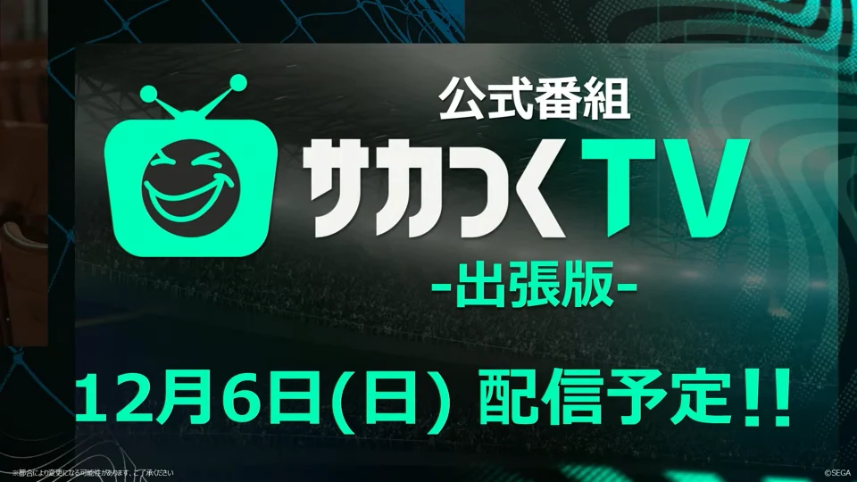
番組終盤には、12月6日（日）の「サカつくTV 公式大会出張版」を予告。スペシャルゲストや未公開情報、重要発表にも触れていました。さらに2027年1月の1周年、2月のシリーズ31周年に向けて準備を進めているとのこと。何が発表されるのか、ここは素直に楽しみに待ちたいです。
更新確認ポイント：Ver.3.0の正式実施日、シナリオモード・超覚醒の最終仕様、バイエルンSPの提供割合、サポータープロジェクトの詳細条件は、ゲーム内や公式サイトの続報を確認してください。
▶ 次回予告を見る（65:41）